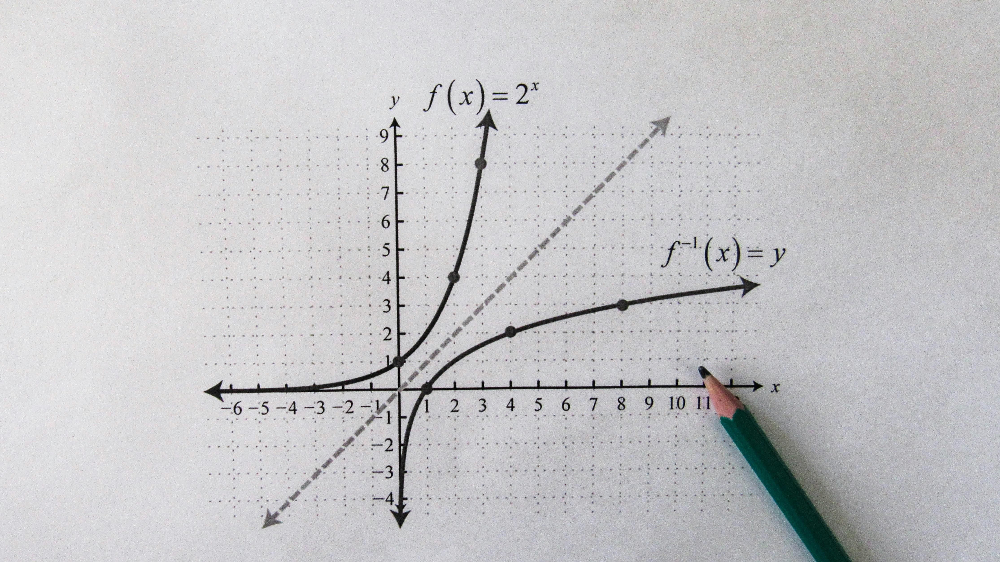
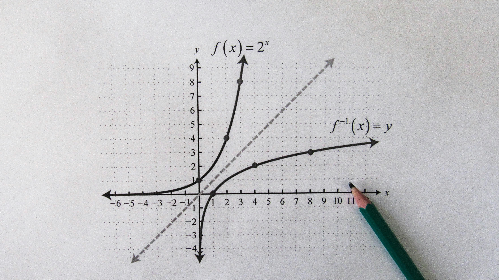

¡Ánimo con las siguientes actividades!
Análisis de gráficas
Unidad 8: Análisis de gráficas

Obra publicada con Licencia Creative Commons Reconocimiento Compartir igual 4.0
¡Ánimo con las siguientes actividades!

Obra publicada con Licencia Creative Commons Reconocimiento Compartir igual 4.0